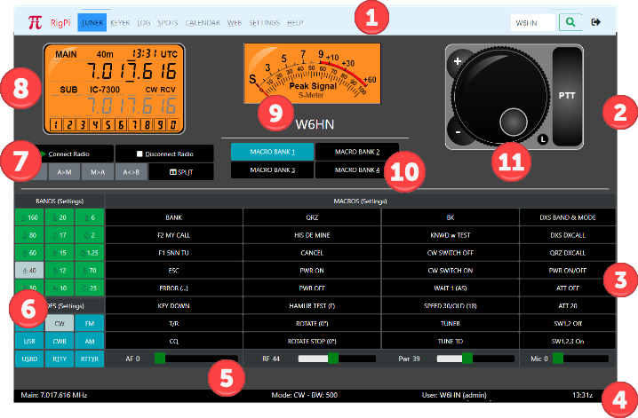
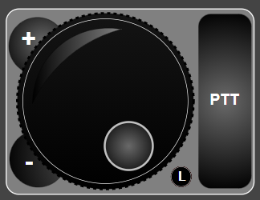
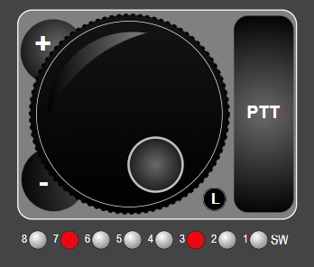
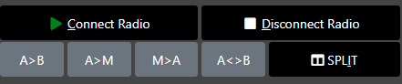
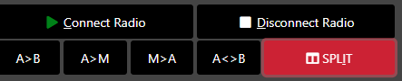
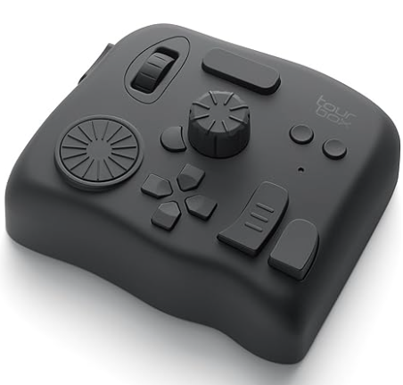

1: Navigation Bar
•Navigate to https://www.rigpi.net by clicking the RigPi logo or RigPi name.
•TUNER...WEB: opens window.
•SETTINGS: contains a list of settings windows, click the down-arrow.
•HELP: sources of help for RigPi.
•Search box: enter call to look up in the FCC database or optional QRZ XML online service. Press enter or click the magnifying glass to look up.
•Exit RigPi.
2: Tuning Knob

•Tap/click the detent and rotate knob to tune higher/lower in frequency. The tuning scale is determined by the underlined digit in the frequency readout of the Frequency Panel.
•Tap/click/hold the plus or minus button to move up or down in frequency. Hold tunes in the same direction at the rate of 2 steps per second.
•Tap/click/ the PTT button to engage the RSS PTT function The PTT button can be configured as a toggle or momentary switch.
•L is a Tuning knob frequency lock button. Tap to lock the frequency.

When using the Macro Decimal mode to control external relays, a row of LED lights appears below the Tuning Knob. Tap/click a light to turn on an associated relay, tap/click again to turn it off. One slave connection is available for all accounts. If you attempt to connect more than one RigPi will show an alert telling which account is already using the slave connection. A radio must be connected before relays can be controlled.
3: Macro Bank
•128 macros with 4 banks of 32 programmable macro buttons (SETTINGS>Macros). Macros can be used to send CW, control the radio through Hamlib commands, control the radio through Hamlib "w" commands unique to the selected radio, control relays, look up web information, and send system commands (the system command option is disabled by default). Change the Macro Bank using the a Macro Bank button (10) or a custom macro.
4: Status Bar
•Main frequency (shows red when no radio connected)
•Split frequency (shows when radio is in the split mode)
•Mode
•Passband (BW)
•User, user's call and account username
•UTC Time
•Only the Main Frequency is displayed in narrow screens
5: Sliders
•Sliders are hidden if your radio doesn't support changing levels by CAT.
•4 sliders are provided: AF (AF Level); RF (RF Gain); PWR (Power Output Level); MIC (Mic Level).* The sliders adjust the radio front panel controls, not the CODECs (if appropriate for your radio) or Mumble.
•Sliders can be set with a maximum level or disabled (SETTINGS->Slider Overrides)
*If you find your radio is not responding correctly to sliders, analog level reading for that radio may not be fully implemented. In addition, some radios only support several fixed levels for a slider rather than a continuous range. Please post a note on the RigPi Forum to let us know of any problems you encounter.
•Tap a Band button to change bands or a Mode button to change modes. Each band has a memory for the frequency and mode last used on that band. The selected Mode and Band buttons are highlighted.
•Band buttons can be disabled (SETTINGS->Band Filter) Modes that are not supported by the radio are disabled.
•RigPi relies on the Radio to remember the desired bandwidth for each mode. If a radio (such as Hamlib Dummy) doesn't support this requirement, you can use the TUNE TO macro to set the bandwidth.
7: Radio Connection and VFO

•Optionally turn on radio power and Connect Radio (Green: connected; Red: not connected; Rotating Arrows: connecting). See Advanced Radio Settings.
•Disconnect Radio and optionally turn off Radio power. See Advanced Radio Settings.
•VFO/Memory operations (memory options enabled when split is on)
•See below for details
8: Frequency Panel
When screens are wide enough to display the RSS S-meter, the frequency panel, above, is used.

For narrow screens, where the S-meter is hidden, this format is used.
•Displays the Main and Sub VFO frequencies, band, the current UTC time, operating mode and receive/transmit status.
•A keypad is included to set the frequency of selected digits. See below for all tuning options.
•The Main and Sub frequencies have bars above and below each digit. When a digit is selected the bars above and below the digit are bold. Tap/Click a digit to select it. The selected digit sets the tuning resolution for the Knob and typed digits. Click the lower half of a digit after selection to tune down and the upper half to tune up.
•Change the color theme of the Frequency Panel using Account Settings (SETTINGS>Accounts>Edit). Four options are provided: Orange, Night, LCD, and High Contrast. This setting also affects the S-Meter.
Callout |
Use |
|---|---|
1 |
Information for Main VFO |
2 |
Current band |
3 |
Time (GMT) |
4 |
Main frequency |
5 |
Mode and transmit/receive status |
6 |
Sub VFO information |
7 |
Keypad for entering digits |
8 |
Sub label and radio name |
9 |
Tap to open keypad |
10 |
S-meter |
9: S-Meter
•Shows signal strength when in receive and an optional reading when in transmit. There is no way to adjust the calibration of the S-meter. Some radios may not support S-meter and/or optional transmit queries through CAT. The S-meter is not shown on narrow screens. See the Advanced Radio settings (SETTINGS>Radio>Advanced) for more information on the optional transmit readings.
•Change the color theme of the S-meter using Account Settings (SETTINGS>Accounts>Edit). Four options are provided: Orange, Night, LCD, and High Contrast. This setting also applies to the Frequency Panel.
10: Macro Bank
•Macro Bank to change the displayed bank
Radio Connection and VFO Buttons
The VFO frequency Swap buttons operate when in Split mode.

Button |
Function |
|---|---|
Connect Radio |
Connect the radio for this account. You must set the radio up the first time in SETTINGS>Radio. Green: connected; Red: not connected; Rotating Arrow: connecting. The control will turn on radio power before connecting if the radio is off (supported radios only). |
Disconnect Radio |
Disconnect the radio and turn off power (supported radios only) for this account. |
A>B |
Copy the Main frequency to the Sub frequency (memory functions are enabled when in split mode). |
A>M |
Copy the Main frequency to the RSS frequency memory. This function does not use the memory in the radio. |
M>A |
Copy the frequency in the RSS memory to the Main VFO |
A<>B |
Swap the Main and Sub VFO frequencies. |
SPLIT |
Turn on split for the radio. The Main VFO is used for receiving and the Sub VFO is used for transmitting. Some Hamlib radios do not support split operation. Others cause readout flicker when reading or setting split frequency (especially Icom radios). Split polling can be turned off in Radio settings (SETTINGS>Radio>Advanced). |
Frequency Tuning
Tuning options allow you to tune both Main and Sub VFO's in many ways.
Option |
Operation |
Mobile Device Support |
|---|---|---|
Knob |
Rotate to tune frequency up or down. Click a digit to set tuning resolution. |
Yes |
Knob + |
Tune up one step, determine resolution by clicking a digit. |
Yes |
Knob - |
Tune down one step, determine resolution by clicking a digit. |
Yes |
Click digit |
Click digit to select, then click upper half to tune up or lower half to tune down. |
Yes |
Mouse wheel (or Shift+Mouse wheel) |
Rotate to tune up or down, click digit to set resolution. |
No |
Keyboard > |
Move selection to next digit to right. |
No |
Keyboard < |
Move selection to next digit to left. |
No |
Keyboard ^ |
Tune selected digit up. |
No |
Keyboard ˅ |
Tune selected digit down. |
No |
Keyboard [ |
Down one band |
No |
Keyboard ] |
Up one band |
No |
Click frequency buttons |
Available for wide screens. Select starting digit, then click a value and the selection moves to the next digit. |
No |
Type frequency (via Keypad) |
Availaboe for narrow screens, such as phones. Tap/click starting digit, then tap/click numbers in the keypad. Each time you change a digit, the selected digit moves to the right where you can enter a new digit. |
Yes |
Shortcut keys on the Tuner window provide quick access to many functions. The table below describes these keys. These keys include the Frequency Tuning keys, above. To see a list of all shortcut keys, use ? on your keyboard.
Shortcut |
Function |
|---|---|
Alt+T |
Tuner |
Alt+K |
Keyer |
Alt+L |
Log |
Alt+A |
Calendar |
Alt+W |
Web |
Alt+E |
Settings |
Alt+H |
Help |
Alt+X |
Log Out |
/ |
Lookup Call |
? |
Shortcut List |
Alt+C |
Connect Radio |
Alt+D |
Disconnect Radio |
Alt+1 |
Macro Bank 1 |
Alt+2 |
Macro Bank 2 |
Alt+3 |
Macro Bank 3 |
Alt+4 |
Macro Bank 4 |
+ |
Frequency Up |
- |
Frequency Down |
Up Arrow |
Frequency Up |
Down Arrow |
Frequency Down |
Spacebar |
Transmit |
Left Arrow |
Frequency Select Digit Left |
Right Arrow |
Frequency Select Digit Right |
ESC |
Close Popup |
[ |
Band Down |
] |
Band Up |
Ctrl+1 |
160M |
Ctrl+2 |
80M |
Ctrl+3 |
60M |
Ctrl+4 |
40M |
Ctrl+5 |
30M |
Ctrl+6 |
20M |
Ctrl+7 |
17M |
Ctrl+8 |
15M |
Ctrl+9 |
12M |
Ctrl+A |
10M |
Ctrl+B |
6M |
Ctrl+C |
2M |
Ctrl+D |
1.25M |
Ctrl+E |
70cm |
Ctrl+L |
LSB |
Ctrl+W |
CW |
Ctrl+F |
FM |
Ctrl+U |
USB |
Ctrl+R |
CWR |
Ctrl+M |
AM |
Ctrl+S |
USBD |
Ctrl+T |
RTTY |
Ctrl+Y |
RTTYR |
|
|
The Shortcut Keys are useful for external controllers, such as the TourBox. There is a sample RigPi Configuration file for TourBox. You can download it from RigPi TourBox.

Push-to-Talk
Several ways to engage Push-to-Talk (PTT) are provided. PTT uses CAT (software) and solid state switches (hardware) on the RigPi Keyer and RigPi Audio boards. See SETTINGS>Radio>Advanced for PTT options. See also Keyer settings for alternative ways to use the RigPi Keyer board PTT.
PTT can be Latching (tap to transmit, tap again to receive) or Momentary (hold to transmit, release to receive).
Option |
Operation |
Mobile Device Support |
|---|---|---|
PTT to right of Tuning Knob |
Latch or Momentary PTT |
Yes |
T/R Macro button |
Latch PTT |
Yes |
Space bar |
Latch or Momentary PTT |
No |